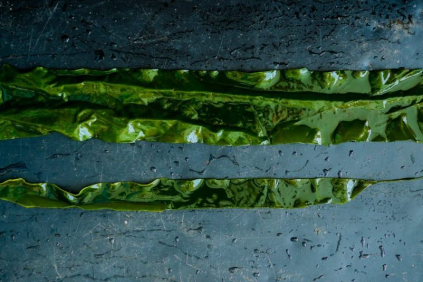
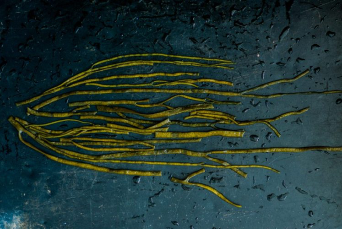
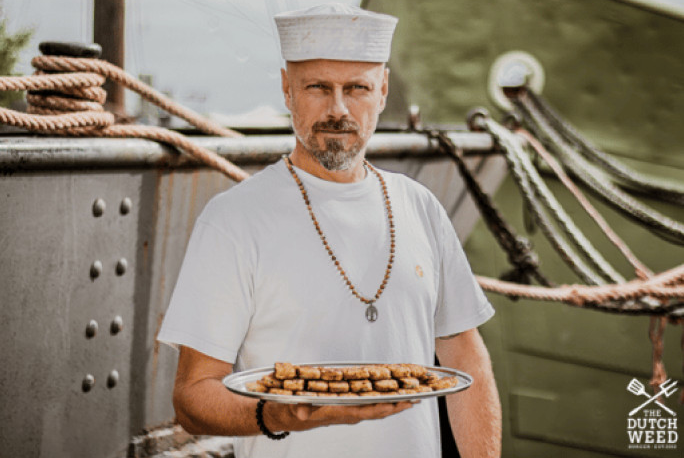

“Challenge the taking culture, nurture the giving culture and create a future where all life thrives.”
In het kort
Dutch Weed Burger maakt duurzame, plantaardige voeding met zeewier en microalgen als belangrijkste ingrediënten. Ze bieden innovatieve, milieuvriendelijke alternatieven voor vleesproducten.
Waarom Zeewier?
Het komt uit de zee, groeit op zonlicht en behoort tot één van de krachtigste planten op deze planeet. Het is een perfect aanvulling op de plantaardige keuken. Zo eten mensen al duizenden jaren zeewier, vanwege de hoge nutrionele waarde. Macro- en micro-algen zoals de Royal Kombu, Zeesla en Chlorella die wij gebruiken, bevatten veel vitamines, mineralen, omega-3-6-9 vetzuren en zitten boordevol eiwitten, ijzer en calcium. Zo heeft het min of meer dezelfde eiwitcombinatie als vlees, waardoor het dus de perfecte vervanger is.
Dutch Weed Burger gelooft in het feit dat we moeten werken met de bronnen die we hebben en de beste toepassing van voedsel is als we het direct gebruiken voor mensen. Zeewier is een hoogwaardige eiwitbron, de teelt neemt geen kostbare landbouwgrond in beslag en het verbruikt nauwelijks zoet water.
Het groene goud
Met plantaardige voeding als basis en zeewier als de voornaamste bron van eiwitten kunnen we ons ecosysteem ontlasten: door de impact van de vlees- en zuivelindustrie te minimaliseren, de uitstoot van broeikasgassen terug te brengen, duizenden liters vers water te besparen en duizenden hectare grond – wat nu voor veeteelt gebruikt wordt – te herstellen.
Volgens wetenschappers zou aan de wereldwijde behoefte van eiwitten voldaan kunnen worden door zeewierteelt op een oppervlakte van drie keer de grootte van Portugal. Dat is de reden dat we zeewier in The Dutch Weed Burger gebruiken: mits duurzaam geteeld is het goed voor de planeet, goed voor de mensen en goed voor dieren. En het smaakt nog ontzettend lekker ook!
Oprichter
Mark Kulsdom - CEO & CO-Founder
Na een intensieve periode als dierenrechtenactivist volgde Mark zijn vrouw in 2012 naar New York als documentaire-maker. Niet veel later werd het concept van The Dutch Weed Burger geboren. Tegenwoordig vervult Mark de rollen van founder, CEO, impact officer, creatieve spil én vegan grillmeister. Zonder Mark geen Weed Burgers!